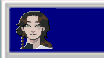
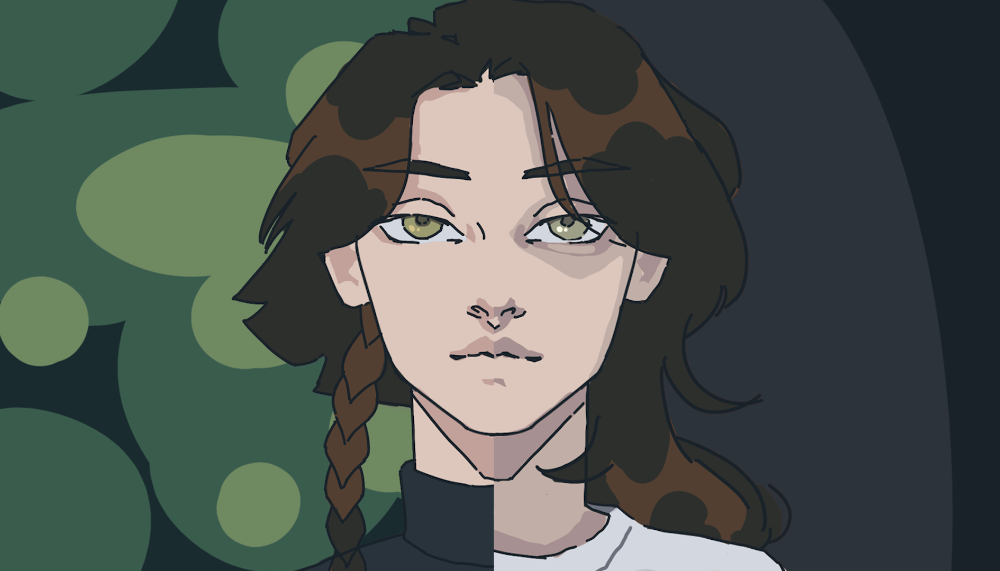
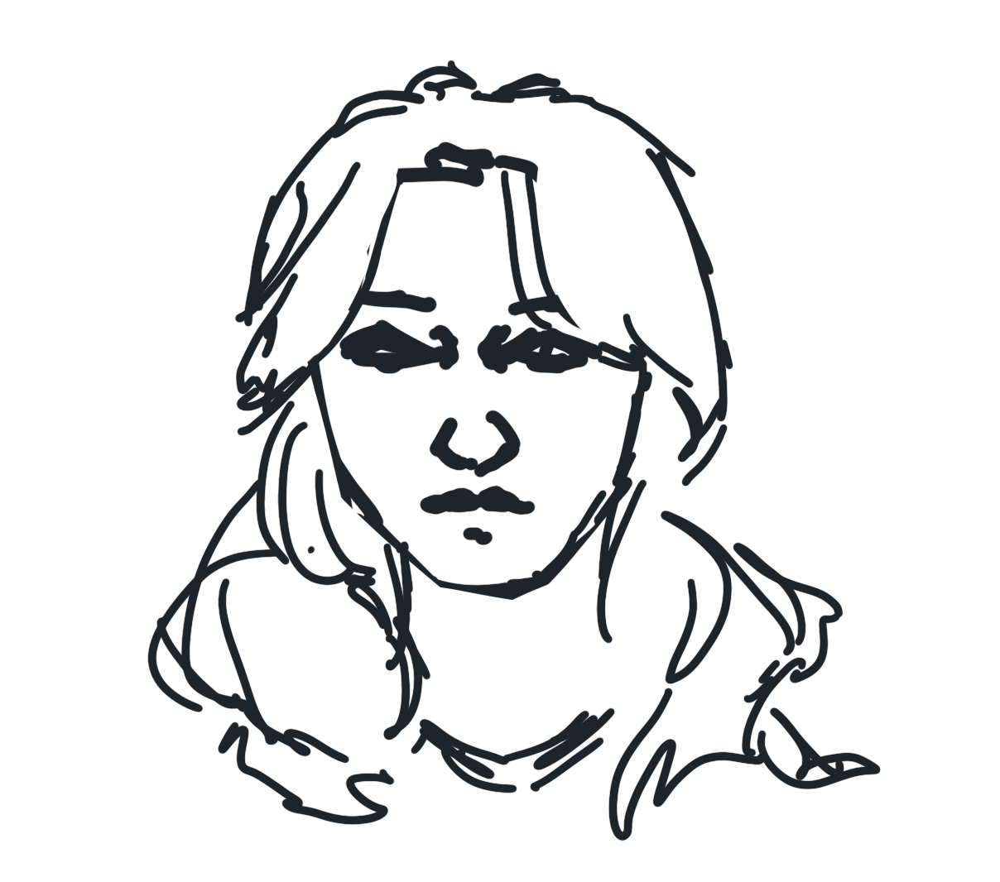
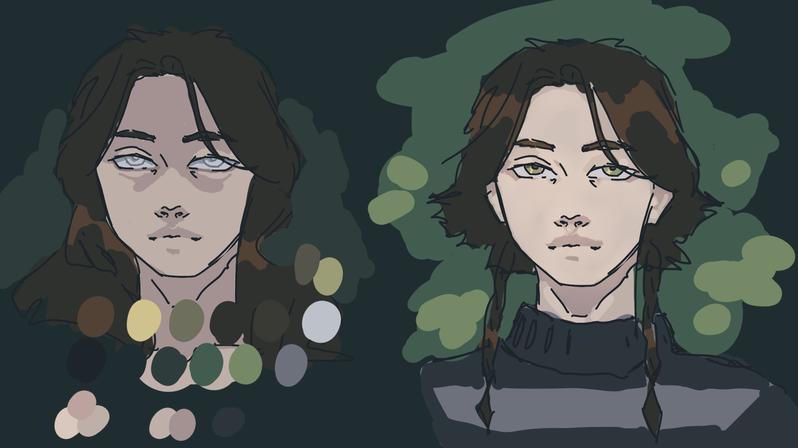
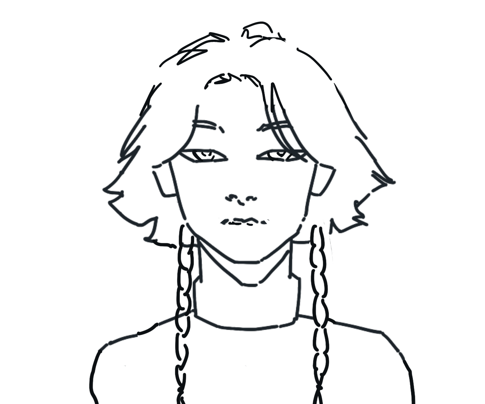

Reality Animation

"REALITY" ANIMATION
Class: Digital Animation [VIS 220]
Year: Fall 2022
Time Frame: ~8 weeks
Assignment: Create a 1-3 minute animation with both audio and visual content.
Creation Process 1:
Inspired by a feeling of isolation as well as the emergence of virtual reality tech
that allows us to escape the real world in favor of a 'perfect' virtual one.

Creation Process 2:
I started with character design. My goal was to use the main chaarcter to emphasize the difference
between the virtual world and reality. In the virtual world we see the main character as this perfect
girl wandering through a serene landscape. In reality, she lives in a loud and chaotic city and is far
from perfect.



Final Submission
60% Check-in video